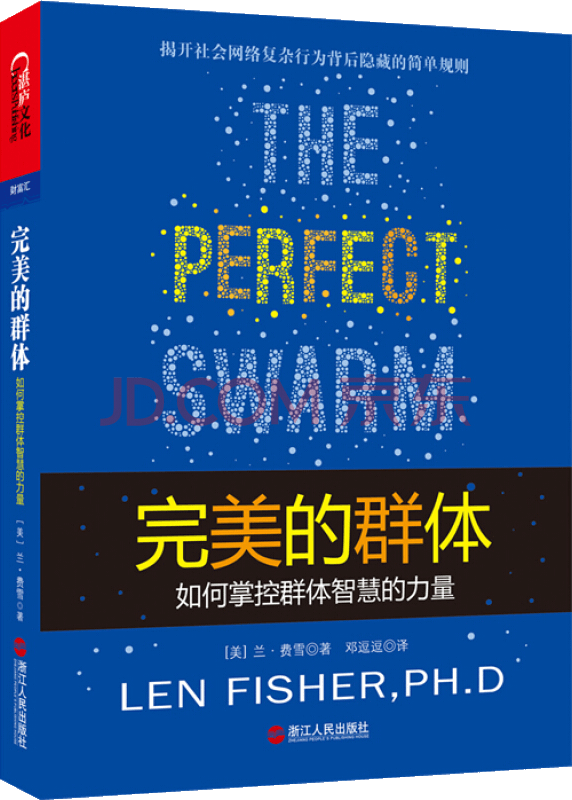

注：【】部分为笔者心得，非原文摘抄。
- 在一个社会团体内，思维的多元化是群体作为一个整体完成有效决策的关键。
- 处于混沌边缘的系统中可能存在两种动态互动模式：一种模式下，系统在不同位置之间不断反复循环；另一种更加富有成效的模式能够适应并满足不断变化的情况。
- 实现群体智能的方式之一便是构建人际网络。
- 对人类而言，获得群体智能的关键，不是丢失个体性，而是让个体学会如何与邻近的其他个体适当地互动。
- DNA 的复制过程取决于一种被称为聚合酶链反应的生物连锁反应。
- 引入负反馈来抵消连锁反应和正反馈的失稳效应，以使类似的稳定效果可以出现在很多社会情境中。（物理学家定义的正反馈和负反馈与心理学家所说的是不一样的。对于心理学家而言，负反馈具有破坏性和不稳定性，而正反馈则是良好且有利的。对于物理学家而言，其含义通常正好相反。）
- 一个团体中，只要有 5%的领导者知道目标，就有 90%的机会成功领导团体其他成员达成目标。
- 如果路上有一个人凝望某处，可以诱使 40%的行人一起凝望；有两个人凝望，“模仿者”的比例为 60%；有五个人凝望，“模仿者”的比例上升至 80%。
- 有目标便可轻松地领导一个群体，只要该群体中的其他个体没有自己不同的目标。
- 群体中存在一些知情的个体，可以使世界展现出完全不同于以往的状态。
- 缺乏个体知识和目标的群体只能可以保持一个群体的整体性，并对环境作出反应，但很难，甚至不可能主动应对。
- 个体信息和行为影响一个群体的方式取决于正反馈、负反馈和级联连锁反应之间的一个微妙的动态相互作用。
- 不要盲目地跟随前人的脚步。
- 要想吸引和维持公众对某个问题的关注，正反馈发挥着重要的作用。
- 如果你看到别人用更好的方法处理好一件事，就向他学习。
- 在穿过整个城市的复杂行程中，选择一条右转比例相对较高的路线。
- 智能手机用户符合群体智能的定义，因为他们在没有明显领导者的情况下，通过一对一的沟通加强了群体作为一个整体的表现。但这种网络具有“混乱、主观、无法验证真实性和准确性”的弱点。
- 如果你和一群人同处于一个危险环境中，你应该用 60%的时间跟随人群，用剩余 40%的时间找到自己的逃生路线。
- 在人群中穿行的最好办法就是保持与人群流动的同步性，随着人群一起流动而不是打乱它的秩序。
- 能够使我们冲着目标前进而不撞向他人的综合社会力是我们有效地形成一道道人流，就像是行军蚁要求自己保持队形一样。
- 如果人群中的每个个体都试图以两倍的速度前行，净效应就是人群的实际行动速度减半。
- 在所谓的“恐慌”状况下，人们的真实行为的两个事实：一个事实是，通常只有到了事态很严重了，人们才会意识到危险性；另一个事实是，即使觉察到了真正的危险，人们的最初反应也都是先寻找自己的家人和朋友，而不是寻找出口或者逃离的路。
- 大多数人都有一种本能，那就是用一些熟悉可辨别的东西去解释那些反常的事物。
- 总是与其他人保持一定的距离。
- 群体人数越多，猜想越精确。
- 群体智慧并非奇迹，而是一个关于统计学的问题。很重要的一点是，每个个体的猜测都必须是独立的。如果不是，那么群体智慧便会迅速消失。
- 没有了独立的猜测，群体中大多数成员会受到某个强大数字的影响而得出极其错误的估计。
- 在状态估计问题中，如果结果要取“平均”意见，那么，与众不同的观点与好观点一样重要。
- 认知多样性包括：
- 知识——群体里一系列不同领域的相关知识；
- 观点——审视问题的不同方法；
- 解释——对问题进行分类或对观点进行区分的不同方法；
- 启发——找出问题答案的不同方法；
- 预测模型——推理原因与结果的不同方法。
- 多样性预测定理只证明了在状态估计问题中，群体答案比大多数成员个体的答案好。如果群体里有专家，那么成员个体的答案可能要比群体平均值好。
- 最优秀的专家是那些在其他领域各方面都有广博的知识，被称为“狐狸”的专家，而不是那些在某方面有很深的造诣但知识面狭窄的“刺猬”。“狐狸”们的优势是能够做出更准确的预测，因为他们自身就存在多样性优势。
- 德尔菲法：
- 在小组成员间传播某一问题；
- 收集反馈、建议和支持的论据；
- 将收集的信息返回给小组成员并咨询他们的意见；
- 如果可能的话，重复步骤 2 和步骤 3 直到达成共识。
- 无论我们是否采用平均数，是否接纳大多数人的意见，或是否找出知识最渊博的人并听取他们的指导，总是有一些人要牺牲自己的意见以使整个群体能够从群体智慧中获益。
- 若要使法定人数原理有效，我们必须能够信任那些我们决定是否要模仿的人的可信度和知识。
- 社会压力会迫使群体成员用扭曲的方式进行思考，过早和错误地下结论。
- 理想的投票系统的完整标准清单：
- 完整性：如果有两个选择，投票系统应该总是让我们选择其中一个而淘汰另外一个；
- 一致性：如果每个个体都选择一个而排除另一个，那么他们的综合投票就应该反映这个选择；
- 非专制性：最终结果不能建立在某个个人的偏好上而不顾及其他人的想法；
- 可传递性：如果综合后的投票结果显示社会选择 X 而淘汰 Y，选择 Y 淘汰 Z，则同样应该产生这样的结果，即选择 X 淘汰 Z；
- 不相关选择的独立性：如果有三个选择，那么任何两个的排名顺序不应受到第三个选择的排序的影响；
- 广泛性：允许任何可能的个体为选择排序。
- 选择一个简单的、对我们的目标而言合理的投票系统，然后坚持使用它。
- 群体思想的主要特征：
- 一致性的压力，让人觉得如果不同意群体的思维方式和结论就会受到排挤的威胁或实际制裁；
- 群体内思想的封闭性，以至于任何质疑都将被排除；
- 高估群体的实力。
- 摆脱群体思想虽然很难，但并不是没有可能。出了要拥有钢铁般的意志，更关键的是要暂时跳出集体环境，独立思考和自我总结，然后再回到集体中分享你的结论。
- 【任何时候都不要放弃独立思考。】
- 六度分隔的信件传递实验中，有 24163 条关系链参与实验，其中 384 条关系链完成任务，完成率只有 1.5%，因为大部分人缺乏完成传递的动力。
- 关注网络中的核心比关注个人更加有效，让个人节点“更适合”自己的目标，从而为关系链延续下去提供永久动力。
- 如果你不知道谁能够帮助你解决问题，那么你至少要知道谁能够找到帮你解决问题的人。
- 如果是持续为连接数量较少的网络添加任意连接，那么整个网络就会突然呈现出相互连通的状态。
- 如果连接上的传递是单向的而非双向的，那么整个六度分隔或任意度分隔的想法都将不成立。
- 个人防止流行病蔓延的最佳方式就是远离核心，同时注意观察任意可能是远程连接者的人。
- 科学的工作便是将想象的模式与现实进行对比。
- 相邻个体之间的简单互动可以导致复杂的群体行为。
- 商业中的三大规则：
- 通过暂时回避群体环境】做一些独立思考并在返回群体之前通过自己的思考得出结论，可以避免趋同思维的风险；
- 对于紧急情况及需要快速决策的情况，应提前决定怎么办、范围、优先顺序、时机和退出机制；
- 不要把鸡蛋放在同一个篮子里。
- 自组织：指不需要依靠外部的命令，系统按照相互默契的某种规则，各尽其责而又协调地自动形成有序结构。简单来说，简单规则产生复杂模式的过程被称为“自组织”。
- 动态次序：存在于无序形式中的次序被称为动态次序，它来自个体间的互动规则。
- 复杂自适应系统：成员能够共同应对周围环境变化的群体。
- 涌现特性：整体会因各组成部分的相互连接和互动呈现出的新的特性，这种新的特性只有整体才具有，任何组成部分都不具有。
- 群体智能：当一个群体可以利用群体行为，利用群体中的任何个体都无法完成的方式共同解决问题时，群体行为就变成了群体智能。
- 正反馈：受控部分发出反馈信息，促进或加强控制部分的活动，它会逐步放大微小的影响。
- 负反馈：受控部分发出反馈信息，削弱控制部分的活动。
- 福特效应：动力系统中，初始条件下微小的变化能带动整个系统的、长期的、巨大的连锁反应。
- 连锁反应：相关的事物发生相应的变化。
- 伯德三规则（克雷格·雷诺兹编写的具有生命行为特征的人工生命群体程序，满足以下三条规则）：
- 避免：避免碰撞到其他个体；
- 定向：按照最接近自己的个体前行的平均方向前进；
- 吸引：向最接近自己的个体的平均位置移动。
- 多样性预测定理：集体误差 = 平均个体误差 - 预测误差
- 多数意见：当答案是几个选项时，群体中多数人的意见通常趋向于正确。
- 陪审团定理：如果群体中每个成员都有高于 50%的概率得出问题的可能答案（该问题只有两种可能的答案），那么，当群体人数增加时，多数裁决正确的概率会更接近 100%。
- 法定人数响应：一个群体达成了共识，每个个体对某一选择的倾向性随着已选择了这一选项的其他成员的数目（非线性）急剧增长。
- 投票悖论：当有三个或三个以上的选择时，投票可能会导致前后矛盾的结局。
- 群体思想：群组内成员由于社会压力而形成的一种“自欺欺人、强迫性同意，以及与群组价值观和道德观一致”的思维模式。
- 本福德定律：一堆从实际生活中得出的数据里，以数字 1 为首位数字的数出现的概率约为 30.1%，数字越大，它在首位出现的概率越低。
- 后此谬误：A 发生在 B 之前，因而 A 是 B 的起因。
- 拉姆齐定律：储蓄率乘以货币的边际效用，通常应该等于效用的总净享乐率与最大可能享乐率之差。